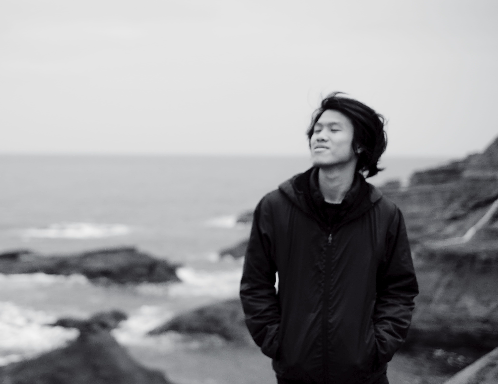

About
I am Yang, Hong-Bin from Taiwan. Petingo is my nickname as well as my username in almost every website.
Currently, I work as a research assistant @ Academia Sinica, Taiwan, conducting research on deep learning-based image forgery detection under the supervision of Prof. Chen, Jun-Cheng.
I have completed my Bachelor's degree in Computer Science at Taiwan Tech and exchanged to Czech Technical University in Prague during the harsh time of COVID-19. My previous research focused on image quality enhancement, and I had collaborated with Prof. Kuo-Liang Chung and published Effective Chroma Subsampling and Luma Modification for RGB Full-color Images Using the Multiple Linear Regression Technique, which is now state-of-the-art in YUV420 chroma subsampling.
I am also an award-winning photographer, where I just won the Special Award in 2021 Shin Kong Mitsukoshi International Photography Contest with this photo. If you are interested in my photography works, please visit my instagram.
Another interest of mine is architecture. I love to take photo of architecture, draw architecture, and make paper model. I had also took several courses related to Architecture and Interior Design during university.
Recently, I read a book titled Interactive Architecture. This book motivated me to rethink the possibilty of the combination of Architecture and Computer Science. Thus, I made up my mind to delve into the interdisciplinarity of the two area by prusuing a Master's Degree.